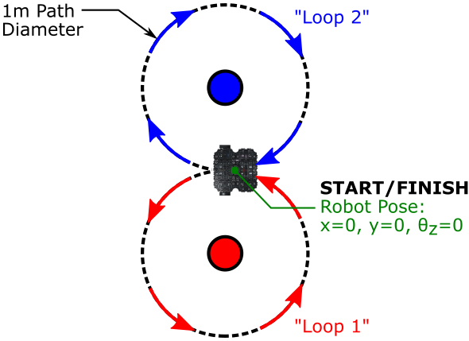
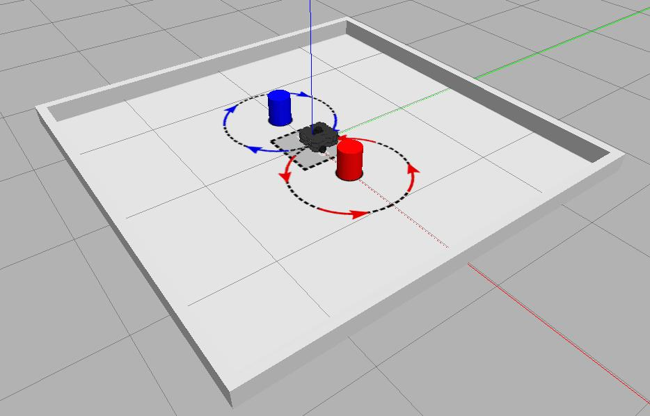

Task 1: Velocity Control
Submit a working ROS package that can be successfully deployed to control a real TurtleBot3 Waffle, making it follow a prescribed motion profile whilst printing key information to the terminal.
Course Checkpoints
You should aim to have completed the following additional parts of the COM2009 ROS Course to support your work on this task:
- Assignment #1: Part 2, up to (and including) Exercise 4.
- Fact-Finding Missions: Mission 1 (Publishing Velocity Commands).
Summary¶
The main objective of this task is to create a ROS node (or multiple nodes) that make your robot follow a figure-of-eight pattern on the robot arena floor. The figure-of-eight trajectory should be generated by following two loops, both 1 meter in diameter, as shown below.

Whilst doing this, you will also need to print some robot odometry data to the terminal at regular intervals (see below for the specifics). In order to get the terminal message formatting right, you might want to have a look at the documentation on Python String Formatting, or refer to any of the code examples that involve printing messages to the terminal in Assignment #1.
Details¶
- The robot must start by moving anti-clockwise, following a circular motion path of 1 m diameter ("Loop 1," as shown in the figure above).
- Once complete, the robot must then turn clockwise to follow a second circular path, again of 1 m diameter ("Loop 2").
- After Loop 2 the robot must stop, at which point it should be located back at its starting point.
-
The velocity of the robot should be defined to ensure that the whole sequence takes approximately 60 seconds to complete (5 seconds).
The timer will start as soon as the robot starts moving.
-
The robot's current pose should be printed to the terminal throughout, where messages should be of the following format (exactly):
Where
{x},{y}and{yaw}should be replaced with the correct real-time odometry data as follows:{x}: the robot's linear position in the X axis, quoted in meters to two decimal places.{y}: the robot's linear position in the Y axis, quoted in meters to two decimal places.{yaw}: the robot's orientation about the Z axis, quoted in degrees to one decimal place.
The data should be quoted relative to its starting position at the beginning of the task, e.g. at the start of the task (before the robot has moved) the terminal messages should read:
These message should be printed to the terminal at a rate of 1Hz. It doesn't matter if the messages continue to be printed to the terminal after the robot has stopped (i.e. after the figure-of-eight has been completed).
-
The ROS package that you submit must contain a launch file called
task1.launch, which we (the COM2009 teaching team) will use to execute the correct functionality from within your package. This functionality must be launch-able via the command:... where
{}will be replaced with your team number.(ROS will already be running on the robot before we attempt to execute your launch file).
A note on Odometry¶
When the robot is placed in the arena at the start of the task its odometry may not necessarily read zero, so you will need to compensate for this. You'll therefore need to grab the robot pose from the /odom topic before your robot starts moving, and then use that as the zero-reference to convert all the subsequent odometry readings that you obtain throughout the task.
Odometry and keeping track of the robot's pose is discussed in detail in Assignment #1 Part 2.
Simulation Resources¶
It's easier to develop your node(s) in simulation before testing things out on a real robot. You can use the standard empty_world environment to do this, which can be launched in using the following command:
WSL-ROS Users
You can also launch this using the tb3_empty_world command-line alias.
For the real task, there will be cylindrical objects placed at the theoretical centre of each of the figure-of-eight loops, so your robot will need to move around these as it completes the task. We have therefore also created a simulation environment that is representative of the real world environment during the assessment. This is available in a package called com2009_simulations, which is part of the tuos_ros Course Repo. The instructions for downloading and installing this within your own local ROS installation are available here.
If you've already installed this (as part of Assignment #1 perhaps), then it's worth making sure that you have the most up-to-date version (as discussed here):
Once you've done all this, then you should be able to launch the Task 1 development arena with the following roslaunch command:

Note
There won't be any loop markers on the real robot arena floor during the assessment.
Marking¶
This task will be assessed by the teaching team as part of the Part A submission in Week 6 (i.e. along with Task 2). If things don't work for this first submission then we'll let you know what happened, so that you can try to resolve things for the Part B submission later in the semester.
There are 10 marks available for this task in total, summarised as follows:
| Criteria | Marks | Details |
|---|---|---|
| A: The Motion Path | 5/10 | How closely the real robot follows a true figure-of-eight path in the robot arena, based on the criteria table below. |
| B: Terminal Messages | 5/10 | The correct formatting of your odometry messages, and the validity of the data that is presented in the terminal as the robot performs the task, based on the criteria table below. |
Criterion A: The Motion Path¶
Marks: 5/10
| Criteria | Details | Marks |
|---|---|---|
| A1: Direction of travel | The robot must move anticlockwise for the first loop ("Loop 1") and then clockwise for the second ("Loop 2"). | 1 |
| A2: Loop 1 | The loop must be ~1 m in diameter, centered about the red beacon. | 1 |
| A3: Loop 2 | The loop must be ~1 m in diameter, centered about the blue beacon. | 1 |
| A4: Stopping | Once the robot completes its figure of eight, it must stop with both wheels within 10 cm of the start line. | 1 |
| A5: Timing | The robot must complete the full figure of eight and stop in 55-65 seconds. | 1 |
Criterion B: Terminal Messages¶
Marks: 5/10
| Criteria | Details | Marks |
|---|---|---|
| B1: Rate | Messages should be printed to the terminal at a rate of 1 Hz. | 1 |
| B2: Format | The messages printed to the terminal should be formatted exactly as detailed above. | 1 |
| B3: Data | Each message value (x, y and yaw) should be plausible, that is: they represent the actual pose of the robot, based on all readings being set to zero at the start/finish point (as illustrated above). In addition, each value must be quoted in the correct units (meters or degrees, as appropriate). |
3 |